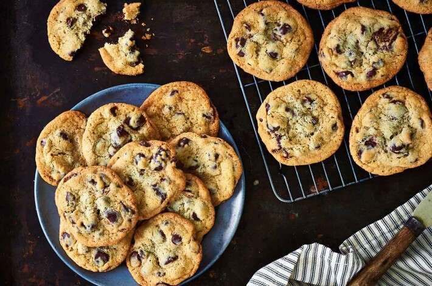

Chocolate Chip Cookies

What is better than a thick and chewy chocolate chip cookie?
A treat perfect for any occassion! These golden cookies
are packed with chips and loaded with buttery flavor! Recipe courtsey
of America's Test Kitchen.
Ingredients
- 1-3/4 flour (8-3/4 ounces)
- 1/2 tsp baking soda
- 14 tbsp unsalted butter (1-3/4 sticks)
- 1/2 cup granulated sugar (3-1/2 ounces)
- 3/4 cup packed dark brown sugar (5-1/4 ounces)
- 1 tsp salt
- 2 tsp vanilla extract
- 1 large egg
- 1 large egg yolk
- 1-1/2 cups bitttersweet chocolate chips
Instructions
- Adjust oven rack to middle position and heat overn to 375 degrees.
Line 2 large backing sheets with parment paper.
- Whisk flour and backing soda together in medium bowl and set aside.
- Heat 10 tbsp of butter in a 10 inch skillet over medium high heat
until melted, about two minutes. Continue cooking,swirling pan
constantly until butter is a dark golden brown and has a nutty aroma,
1 to 3 minutes